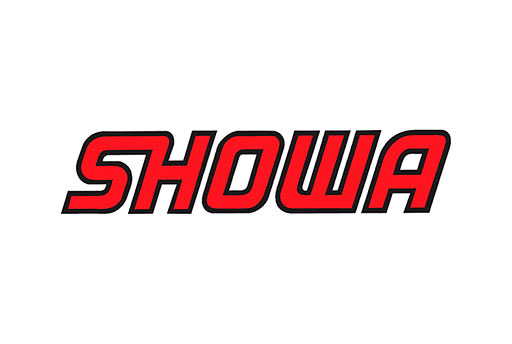
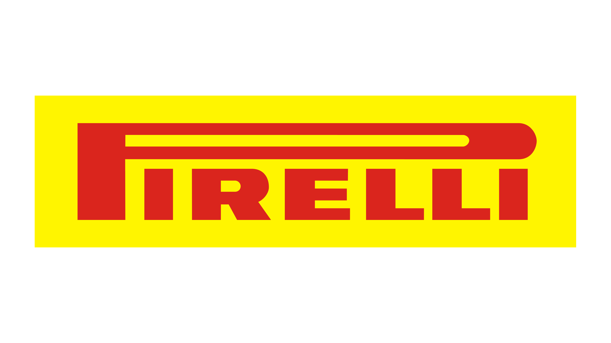

Welcome to Kawasaki Garage Indonesia, disini kami menyediakan info motor-motor dari Kawasaki mulai dari Type Sport, Naked, Trail, dan Supermoto LET THE GOOD TIMES ROLL
History of Kawasaki
Kawasaki Heavy Industries Ltd. (KHI) adalah sebuah perusahaan multinasional asal Jepang yang terutama terkenal sebagai produsen sepeda motor, mesin, alat berat, peralatan dirgantara dan pertahanan, bakal pelanting, serta kapal.
Perusahaan ini juga memproduksi robot industrial, turbin gas, pendidih, dan produk industrial lain. Perusahaan ini memakai nama pendirinya, yakni Shōzō Kawasaki, dan memiliki dua kantor pusat, yakni di Chūō, Kobe dan Minato, Tokyo.
Kawasaki memproduksi sepeda motor, jet ski, kendaraan segala medan, dan mobil. Sepeda motor buatan Kawasaki meliputi sepeda motor sport Ninja, dan motor cruiser, dual-purpose dan sepeda motocross, serta kendaraan utilitas, kendaraan segala medan, dan mesin bensin umum.
Kawasaki "Jet Ski" telah menjadi sebuah merek dagang tergenerisasi untuk menyebut kendaraan air pribadi, terlepas dari apapun mereknya.
Kawasaki H2R
Kawasaki Ninja H2R tersedia dalam pilihan mesin Petrol di Indonesia Super Sport baru dari Kawasaki hadir dalam 2 varian.
Bicara soal spesifikasi mesin Kawasaki Ninja H2R, ini ditenagai dua pilihan mesin Petrol berkapasitas 998 cc.
Ninja H2R tersedia dengan transmisi Manual tergantung variannya.
Ninja H2R adalah Super Sport 1 seater dengan panjang 2070 mm, lebar 851 mm, wheelbase 1450 mm. serta ground clearance 130 mm. Harga dari motor belum bisa diberi tahu karena motor ini exclusive dan di khususkan untuk circuit
Kawasaki H2
Kawasaki Ninja H2 tersedia dalam pilihan mesin Petrol di Indonesia Super Sport baru dari Kawasaki hadir dalam 4 varian.
Bicara soal spesifikasi mesin Kawasaki Ninja H2, ini ditenagai dua pilihan mesin Petrol berkapasitas 998 cc.
Ninja H2 tersedia dengan transmisi Manual tergantung variannya.
Ninja H2 adalah Super Sport 1 seater dengan panjang 2085 mm, lebar 770 mm, wheelbase 1455 mm. serta ground clearance 130 mm. Harga dari motor ini adalah Rp 760 Juta OTR
Kawasaki ZX-10R
Kawasaki Ninja ZX10-R tersedia dalam pilihan mesin Petrol di Indonesia Super Sport baru dari Kawasaki hadir dalam 2 varian.
Bicara soal spesifikasi mesin Kawasaki Ninja ZX10-R, ini ditenagai dua pilihan mesin Petrol berkapasitas 998 cc.
Ninja ZX10-R tersedia dengan transmisi Manual tergantung variannya.
Ninja ZX10-R adalah Super Sport 2 seater dengan panjang 2085 mm, lebar 740 mm, wheelbase 1440 mm. serta ground clearance 145 mm. Harga dari motor ini adalah Rp 492 Juta OTR
Kawasaki Z1000
Kawasaki Z1000 tersedia dalam pilihan mesin Petrol di Indonesia Super Sport baru dari Kawasaki hadir dalam 2 varian.
Bicara soal spesifikasi mesin Kawasaki Z1000, ini ditenagai dua pilihan mesin Petrol berkapasitas 1043 cc.
Z1000 tersedia dengan transmisi Manual tergantung variannya.
Z1000 adalah Super Sport 1 seater dengan panjang 2045 mm, lebar 790 mm, wheelbase 1435 mm. serta ground clearance 125 mm. Harga dari motor ini adalah Rp 351 Juta OTR
Kawasaki Z900
Kawasaki Z900 tersedia dalam pilihan mesin Petrol di Indonesia Super Sport baru dari Kawasaki hadir dalam 2 varian.
Bicara soal spesifikasi mesin Kawasaki Z900, ini ditenagai dua pilihan mesin Petrol berkapasitas 948 cc.
Z900 tersedia dengan transmisi Manual tergantung variannya.
Z900 adalah Super Sport 2 seater dengan panjang 2115 mm, lebar 825 mm, wheelbase 1450 mm. serta ground clearance 130 mm. Harga dari motor ini adalah Rp 252 Juta OTR
Kawasaki Z900RS
Kawasaki Z900RS tersedia dalam pilihan mesin Petrol di Indonesia Cafe Racer baru dari Kawasaki hadir dalam 2 varian.
Bicara soal spesifikasi mesin Kawasaki Z900RS, ini ditenagai dua pilihan mesin Petrol berkapasitas 948 cc.
Z900RS tersedia dengan transmisi Manual tergantung variannya.
Z900RS adalah Cafe Racer 2 seater dengan panjang 2100 mm, lebar 845 mm, wheelbase 1470 mm. serta ground clearance 130 mm. Harga dari motor ini adalah Rp 305 Juta OTR
Kawasaki ZX-6R
Kawasaki Ninja ZX-6R tersedia dalam pilihan mesin Petrol di Indonesia Super Sport baru dari Kawasaki hadir dalam 2 varian.
Bicara soal spesifikasi mesin Kawasaki Ninja ZX-6R, ini ditenagai dua pilihan mesin Petrol berkapasitas 636 cc.
Ninja ZX-6R tersedia dengan transmisi Manual tergantung variannya.
Ninja ZX-6R adalah Super Sport 2 seater dengan panjang 2024 mm, lebar 710 mm, wheelbase 1400 mm. serta ground clearance 130 mm. Harga dari motor ini adalah Rp 318 Juta OTR
Kawasaki ZX-25R
Kawasaki Ninja ZX-25R tersedia dalam pilihan mesin Petrol di Indonesia Sport baru dari Kawasaki hadir dalam 4 varian.
Bicara soal spesifikasi mesin Kawasaki Ninja ZX-25R, ini ditenagai dua pilihan mesin Petrol berkapasitas 249.8 cc.
Ninja ZX-25R tersedia dengan transmisi Manual tergantung variannya.
Ninja ZX-25R adalah Sport 2 seater dengan panjang 1980 mm, lebar 750 mm, wheelbase 1380 mm. serta ground clearance 125 mm. Harga dari motor ini adalah Rp 99,5 - Rp 116,6 Juta OTR
Kawasaki KSR Pro
Kawasaki KSR Pro tersedia dalam pilihan mesin Petrol di Indonesia Street baru dari Kawasaki hadir dalam 2 varian.
Bicara soal spesifikasi mesin Kawasaki KSR Pro, ini ditenagai dua pilihan mesin Petrol berkapasitas 111 cc.
KSR Pro tersedia dengan transmisi Manual tergantung variannya.
KSR Pro adalah Street 2 seater dengan panjang 1725 mm, lebar 740 mm, wheelbase 1170 mm. serta ground clearance 225 mm. Harga dari motor ini adalah Rp 34,7 Juta OTR
Kawasaki KLX 250
Kawasaki KLX 250 tersedia dalam pilihan mesin Petrol di Indonesia Off Road baru dari Kawasaki hadir dalam 2 varian.
Bicara soal spesifikasi mesin Kawasaki KLX 250, ini ditenagai dua pilihan mesin Petrol berkapasitas 249 cc.
KLX 250 tersedia dengan transmisi Manual tergantung variannya.
KLX 250 adalah Off Road 2 seater dengan panjang 2200 mm, lebar 820 mm, wheelbase 1430 mm. serta ground clearance 285 mm. Harga dari motor ini adalah Rp 65,1 Juta OTR
Kawasaki KLX 150
Kawasaki KLX 150 tersedia dalam pilihan mesin Petrol di Indonesia Off Road baru dari Kawasaki hadir dalam 10 varian.
Bicara soal spesifikasi mesin Kawasaki KLX 150, ini ditenagai dua pilihan mesin Petrol berkapasitas 144 cc.
KLX 150 tersedia dengan transmisi Manual tergantung variannya.
KLX 150 adalah Off Road 1 seater dengan panjang 2070 mm, lebar 825 mm, wheelbase 1340 mm. serta ground clearance 255 mm. Harga dari motor ini adalah Rp 31,2 - Rp 37,7 Juta OTR
Kawasaki D-Tracker 150
Kawasaki D-Tracker tersedia dalam pilihan mesin Petrol di Indonesia Off Road baru dari Kawasaki hadir dalam 6 varian.
Bicara soal spesifikasi mesin Kawasaki D-Tracker, ini ditenagai dua pilihan mesin Petrol berkapasitas 249 cc.
D-Tracker tersedia dengan transmisi Manual tergantung variannya.
D-Tracker adalah Off Road 2 seater dengan panjang 2130 mm, lebar 795 mm, wheelbase 1420 mm. serta ground clearance 270 mm. Harga dari motor ini adalah Rp 34,7 - Rp 65,7 Juta OTR
Kawasaki Racing Team KRT
Tim Balap Kawasaki telah merebut gelar Riders dan Produsen selama empat tahun berturut-turut, dari 2015 hingga 2018. Juara bertahan tahun ini Jonathan Rea, yang bergabung dengan Leon Haslam, memasang target untuk merebut kembali kedua gelar tersebut di musim kelima.
Race1 dan Race 2 dilaksanakan pada hari Sabtu dan Minggu, dengan poin yang diberikan kepada top 15. Sprint race baru dilaksanakan pada Minggu pagi, sehingga dapat memberikan additional point kepada top 9 dan meningkatkan starting point kepada para top 9 di race 2.
Dengan peraturan balap yang semakin ketat setiap tahun, kinerja dari motor yang berbasis production model ini menjadi faktor yang semakin penting. Untuk Superbike World Championship, Tim Balap Kawasaki menurunkan mesin Ninja ZX-10RR yang disiapkan oleh pabrik.
Bahkan sebagai model supersport unggulan dari seri Kawasaki Ninja ZX-10R, motor Ninja ZX-10RR sangat menonjol, dan telah dikembangkan untuk performa sirkuit dan untuk meraih kemenangan World Superbike. Connecting titanium rods, pengaturan suspensi yang disetel halus, dan roda Marchesini yang ditempa semakin meningkatkan kinerja dan penanganan engine model standar.
Sesuai dengan peraturan balap terbaru, penyetelan pabrik yang cermat mempertajam stok Ninja ZX-10RR menjadi senjata lintasan pemenang kejuaraan.
Riders
# 1 Jonathan Rea
Date of Birth | 2 Feb 1987
# 22 Alex Lowes
Date of Birth | 14 Sep 1990
Brakes Powered by

Exhaust Powered by
Shock Powered by
Tires Powered by

Sponsored by
Profile
Berikut adalah Profile saya
Nama : Muhammad Ridwan Setiawan
NIM : 10121091
Kelas : If 3